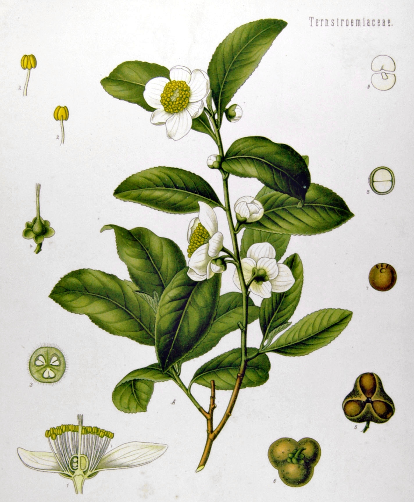

|
Despre ceai Ceaiul „adevărat” provine dintr-o singură plantă: un arbust noduros și cu aspect zgrunțuros, cu numele științific de „Camellia sinensis”, indiferent dacă un ceai este negru sau verde și diferă doar procedeele de prelucrare.Ceaiurile din plante, făcute din ierburi precum menta și mușețelul, nu sunt, strict vorbind, ceai. Ele au un nume propriu - tizane - care provine din cuvântul grecesc „ptisánē” (orz măcinat, pisat), însă sunt folosite la fel ca infuziile plantei de ceai: pentru recreere și medicină homeopată. Deoarece frunzele plantei Camellia Sinensis sunt amare și voluminoase, acestea trec printr-o multitudine de procese menite sa conserve, sa cultive și să amplifice gustul ceaiului. În general, ceaiurile sunt împărțite în categorii în funcție de modul acesta de prelucrare. Fiecare categorie este asemanatoare celor de vin sau de brânză, astfel că prezinta gust, miros și culoare diferită și specifică. Cele 6 categorii principale de ceaiuri sunt verde, negru, alb, galben, oolong și fermentat. Ceaiul în România Deși ceaiul din Camellia Sinensis nu este la mare căutare, tizanele folosite în scop medicinal pretutindeni în țara noastră. Ceaiul din tei este cel mai popular exemplu, atât în spațiul urban cât și rural. În același timp, ceaiuri precum cel de sunătoare, menta, mușețel etc. sunt foarte populare.Totuși, în scop recreativ, cafeaua rămâne cea mai populară băutură din țara noastră, pe lângă apa. Cafenelele sunt înrădăcinate în cultura urbană, iar ceaiul servește mai mult ca un înlocuitor atunci când este prea târziu pentru o a doua cafea. | 
Din ierbarul „Köhler's Medizinal-Pflanzen”, de Franz Eugen Köhler
| |